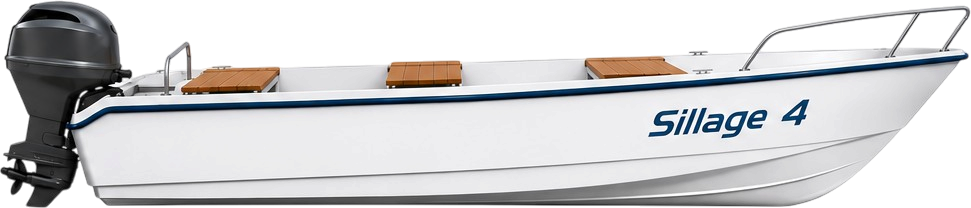
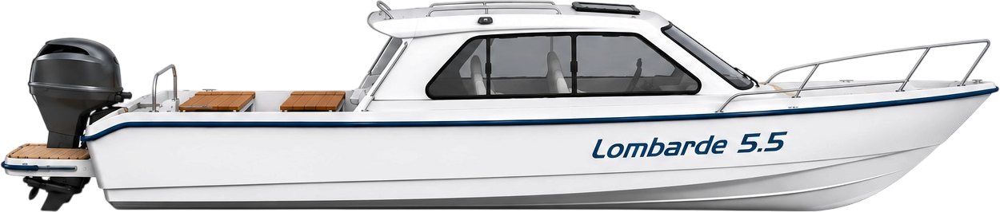

Les bateaux
de St Mandrier
Trois bateaux construits sur place, pour la pêche et la balade.

Sillage 4
Le plus simple de la gamme et le plus léger. Un bateau de pêche pour le pêcheur assidu, qui sert aussi pour la balade, et qui passe là où l'eau est basse grâce à son très faible tirant d'eau.

Lombarde 5.5
Pensé pour la promenade en mer, sur un lac, un estuaire ou un canal. Facile à transporter, il offre une cabine pour deux personnes et peut recevoir un coin cuisine. L'arrière accueille deux banquettes et une plate-forme.

Makaire 8
Le plus grand et le plus confortable. Il est fait pour les sorties en mer ou sur un lac, et pour la pêche au gros. Une cabine à l'avant, une cabine centrale avec cuisine ou coin détente, un poste de pilotage à l'arrière et un solarium sur le toit.
Un projet de bateau
Dis-nous ce que tu veux faire sur l'eau, on t'aide à choisir le bon modèle.
Nous écrire